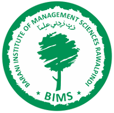

MENU


MENU
The University of Arid Agriculture,Rawalpindi is the only istitution of its kind on rainfed agriculture in the world . It was established at Shamsabad,Murree Road, Rawalpindi o April 27,1994 on the occasion of the convocation of the Barani Agriculture College, Rawalpindi
Umair Plaza, 3rd Floor, 6th Road Chowk, Murree Road, Rawalpindi
admin@biit.edu.pk (92)0306-1398660,(92)03262591846
The University of Arid Agriculture,Rawalpindi is the only istitution of its kind on rainfed agriculture in the world . It was established at Shamsabad,Murree Road, Rawalpindi o April 27,1994 on the occasion of the convocation of the Barani Agriculture College, Rawalpindi.The University of Arid Agriculture,Rawalpindi is the only istitution of its kind on rainfed agriculture in the world . It was established at Shamsabad,Murree Road, Rawalpindi o April 27,1994 on the occasion of the convocation of the Barani Agriculture College, Rawalpindi
Umair Plaza, 3rd Floor, 6th Road Chowk, Murree Road, Rawalpindi
admin@biit.edu.pk (92)0306-1398660,(92)03262591846
Dr.Muhammad Jamil Sarwar
Dr.Munir Ahmed
Mr.Muhammad Ayub
Mr.Syed Naazir Abbas Kazmi
Dr.Sadaf , Assistance Pro.
Dr.Saeed Iqbal , Assistance Pro.
Dr.Khurram Javed , Assistance Pro.
Dr.Muhammad Abdullah Abid , Assistance Pro.
Dr.Shahid Abid , Assistance Pro.
Umair Plaza, 3rd Floor, 6th Road Chowk, Murree Road, Rawalpindi P.(92)0306-1398660,(92)03262591846 (92)0306-1398660,(92)03262591846 Fax..(092-51)9290409
Mail:admin@biit.edu.pk